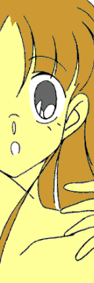
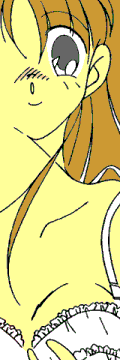
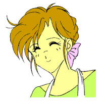

戻る
――萌え燃えっ！ 白塁学園高校女子ロボＴＲＹ部 ＥＸ４――
ＨＥＲＯ美少女変身騒動っ（前編）
・・・あるいは、「ヤマト→ナデシコ七変化っ（笑）」
ＣＲＥＡＴＥＤ ＢＹ ＭＯＮＤＯ
目の前で、光がくるくる回っている……。
我に返ると、円形の手術台の上に両手足を縛られ、大の字で仰向けにされている自分に気付く。
「ほ〜っほほほほほほっ気がついたわねざますっ」
無影灯の光をさえぎり、鏡餅のような影が自分の顔を見下ろしてくる。
何処かで見たような記憶があるが、誰だか思い出せない……。
「うむっ！ 気がついたのであああ〜るっ！」
反対側からむっとする汗の臭いとともに、いかついシルエットの人物が視界に割り込んでくる。
こちらもよく知っているはずなのに、何故か名前が出てこない……。
「ほ〜ほほほ喜ぶざますっ。今からあ〜たをあったくしたちの一族にふさわしい肉体に改ぞ〜っするざますっ！」
口元に手を当てて、一方の影が脳天に響くような声で高笑いする。
「うむっ。この手術が無〜事に終わったらっ、貴様もこのわたしと同じよ〜なっ、力強い肉体を得ることがで〜きるのであああ〜るっ！！」
もうひとつの影がそれに答えて重々しくうなずき、そして「ふんぬっ！」と筋肉誇示ポーズをきめる。
「ほ〜ほほほっ、お〜っほほほほほほほっ！！」「ふんぬっ！ ふんぬっ！ ……だあありゃっしゃあああっ！！」
高笑いと筋肉が、手術台の周囲をぐるぐるとメリーゴーランドのように回り出す。
……い、嫌だっ！ ……やめるんだっ！！
大声で叫んだはずなのに、その声は届かない。
「ほ〜っほほほほほほほっ。改ぞ〜っ手術っ、開始ざますっ！！」
「うむっ。濃縮プロテイン入り人体強化アンプルっ、注〜入うう〜っであああ〜るっ！！」
鼻の穴に突っ込まれた管（くだ）から、得体の知れない液体をだくだくと流し込まれる（……）。
……うっ、……うぎゃあああああああっ！！
さらにあちこちからわいて出てきた手術着姿の一団が、自分のまわりをばたばたと取り囲む。
そして彼らは手に手に点滴パックや電気ショック用の器具（除細動器）やらを持ち、互いに叫び合う。
「血ガス、血算、生化っ！」
「患者を下ろしたら、すぐにバイタルとってっ！」
「ＴＡＥの方がいいんじゃないですかっ？」
「テンションだっ！ チェストチューブっ！」
「サチュレーション下がってますっ！！」
「救急車が来る前にトリアージだっ！」
「意識レベル３００、血圧触診で８０っ！」
「……矢部っ、お前はディシジョンメイクが遅過ぎるっ」
「ＶＦだっ！ 除細動っ！！」
違う。なんか違う……っ（笑）。
だが『手術』されている当人にとっては、そういうのはささいなこと（？）でしかなかった。
やめろおおっ！ やめてくれええええ〜っ！！
藤〇 弘ばりに身をよじらせ叫ぶが、何故か声にならない。
そうこうしているうちに、腕が、肩が、胸が、ふとももが……全身がむきむきとマッシブに盛り上がっていく。
「ほ〜っほっほっほっ、これであ〜たも一族の立〜派な一員ざますっ！！」
「うむっ。鼻た〜かだかであああ〜るっ！！」
「……さあ讃えるざますっ！ 新たなる益荒男（ますらお）のたんぢょーをっ！！」
うわあああああ〜っ！！ やめろおおおおおおおおおお〜っ！！
首を左右に振ってもがくが、影たちの唱える呪文（笑）が鼓膜を突き破って脳細胞を犯していく……
「女美川むきむき女美川むきむき女美川むきむき女美川むきむき……」
「女美川むきむき女美川むきむき女美川むきむき女美川むきむき……」
「女美川むきむき女美川むきむき女美川むきむき女美川むきむき……」
「女美川むきむき女美川むきむき……………………わはは、わはは、わははははっ…………
・・・は〜っはっはっは〜っ、あぱらぱ〜っ」
……そして、いつしか手術台の上に仁王立ちになり、いっちゃった表情で「アレ」なポーズをとってシャ〇ーンな高笑い（ＣＶ．小林〇志）を上げている自分に気付く…………
「・・・・・・うわあああああああああっ!!」
絶叫とともに、女美川ヤマトは布団の上でがばっと身を起こした。
……夢だった。
女美川家の次男坊が留学先から帰国し、そして白塁学園高校中等部に転入してから数週間が過ぎた。
当初は、「ほんとに筋肉ダルマの弟なのか……？」「……母親違うんじゃないか？」などと噂し合っていたクラスメイトたちだったが、今では「やっぱり似た者兄弟だ」「違うのは外見だけだ」という認識が完全に定着している。
とはいえ一部の女子生徒からは、「頭脳明晰スポーツ万能、見た目もいいし家は（一応）大金持ちなんだから、ファッションセンスや言動の突飛さ（笑）にはとりあえず目をつぶる」とも言われているのだが。
しかし、当の本人はそんな周囲の視線など全く気にも留めず、今日も我が道を突き進んでいく……
女美川ヤマト、十五歳。
座右の銘は、「熱血！ 正義！ 勧善懲悪っ！！」
……だったりする。
「飯綱先輩いっ！！」
昼休みの教室。いきなり大声で自分の名前を呼ばれて、甲介は弁当をのどに詰まらせた。
「飯綱先輩っ！ 今日こそはちゃんとした返事をきかせてくださいっ！」
「…………」
何やら勘違いをした女生徒が期待に満ちた眼差し（笑）を向け、隣の子に「ちゃうちゃう」と否定される。
そして甲介は弁当の中身をかばいながら、目の前で唾をとばす『後輩』に心底うんざりした表情を浮かべた。
――え〜いっ、夏も終わったというのにクソ暑い……っ！！
“沙織” にとっては「ちょっと気になる男の子（本人大否定……笑）」である彼――ヤマトなのだが、甲介にしてみれば単なるアホ以外の何者でもない。
「飯綱先輩っ！ 先輩ほどのメガパペットプレイヤーが、黙って見ているだけなんて間違ってますっ！」
「…………」
「そうっ、今こそ……今こそ飯綱先輩の力が必要なんですっ！」
「…………」
「ですから飯綱先輩っ！ ボクと一緒に正義のために戦いましょうっ！」
「……やだ」
教室に残っていた生徒たちが一斉に肩をすくめる。近頃ヤマトはよくこんな調子で甲介を
“スカウト” しにくるのだ。
何度邪険に断られても、全くあきらめようとしない。
あきらめずに説得を続けていればいつか「わかってもらえる」とでも思っているのか、それともはなっから「断られたこと」に気付いていないのか、はたまた「（正義が）断られるわけがない」と思い込んでいるのか。
たぶん最後のやつだろうな――と、ため息をつく甲介。
はたから見ている分にはおもしろいかもしれないが、のべつまくなしに付きまとわれている当事者としては、正直たまったものではない……。
「飯綱先輩っ、先輩には燃える正義の心はないんですかっ！？」
「全然」
某ウイスキーのＣＭのように、きっぱりと否定する。
「ウソだっ！ ……そう、先輩は自分の心を偽っているっ！！」
「…………」
「飯綱先輩っ、事態は一刻を争うのですっ！ そうっ、いつメガパペットが悪用されてもおかしくないんですっ」
「そりゃ初耳だ」
フラットな口調でそう答えると、甲介はヤマトに背を向け箸を動かす。
曰く、「広く市販されているメガパペットが一斉に犯罪に使用されれば、現行の警察組織では抑止できない」
『評論家』『アナリスト』を自称する、知ったかぶりのテレビ屋が垂れ流すたわごとである。メガパペットをはじめとするホビー用ロボット重機が重大犯罪に使用されたという
“事例” は、今のところひとつもない。
もっとも、これからも――という保証もないが。
「ですから飯綱先輩っ、ボクと先輩とで正義の炎を燃やすのですっ！」
「……ひとりでやれ。ひとりでっ」
あさっての方を向いて拳を握りしめ熱血するヤマトに、甲介は短くツッコミを入れた。
しかしヤマトはくるりと振り向き、甲介の顔を真剣な眼差しで見据えると、
「飯綱先輩っ、先輩になら《バンガイオー》の二号機を預けてもいいですっ！ もちろん二号機だから、赤色で――」
「いらんっ。あんなレギュレーション外のチキチキマシンなんか」
言下に切って捨てる甲介。
ヤマトのメガパペット《バンガイオーＲＶ３》は、あくまでも実験機――それも技術屋の悪癖であれもこれもとボンドカー（もしくは『西部警察』のスーパーＺやマシンＲＳ……なんて今時知ってるヒトいるのだろうか？）よろしく装備をごてごてと施された機体である。
総重量は通常のメガパペットの三倍強。そのため稼働時間は鬼のように短い。
要するに、無茶苦茶 “使い勝手” が悪いのだ。
……ヤマトに言わせれば、「そこがヒーローロボたるゆえん」なのだそうだが。
「そうっ、ダブルバンガイオーならどんな敵が来ても負けませんっ。ボクと飯綱先輩なら最強ですっ！」
おそらく彼の脳裏には、「肩を並べて同時にロケットパンチを発射する二体の《バンガイオー》」といったイメージ映像（笑）が浮かび上がっているのだろう。
「ほんっとヒトの話聞いてないな、お前……」
ぼそりとそうつぶやき、甲介は箸を置く。「契約金に一千万以上、一回の『出動』に三百万以上出せるってんなら一応考えてやる。……当然必要経費と各種保険は別払いでな――」
「正義の戦いにお金は必要ありませんっ！！ 必要なのは燃える心と情熱ですっ！！」
「機体ぶっ壊してもすぐに修理してもらえるお前とは違うんだよ……」
的外れなことを言うヤマトに、甲介は冷えきった視線を向けた。
その日の放課後、ヤマトはひとり、南校舎の屋上にたたずんでいた。
初秋の風が、首に巻かれた白いマフラー（スカーフ）の先をなびかせる（……笑）。
――何故だ？ 何故あれだけの技量を持ちながら、飯綱先輩はメガパペットの正義を貫こうとしないんだっ？
ふと金網越しに下を見ると、カバン片手に校門へと歩いていく甲介の姿があった。
ひとりの女生徒がばたばたと駆け寄ってきて、その後頭部をぺしっとはたく。
「あっ！ あれは元祖ロボＴＲＹ部に対抗して女子ロボＴＲＹ部を名乗り、学園を混乱のドツボに落としている藤原ほのかではないかっ！！」
誰も聞いていないのに、芝居がかった口調で説明的な台詞を叫ぶヤマト。
「そうか……そうだったのかっ！ あの女がそばにいるから飯綱先輩に正義の炎が灯らないんだっ！！」
その身体が、かっと熱くなる……。
右の拳をぐぐっと握りしめ、空いた左腕をビシッと横に振って仁王立ち。
「許さない……許さないぞ藤原ほのかっ！」
そして、なんだかんだと言い合いながら帰っていくふたりの背中に、人差し指を突きつけ言い放つ。
「……そうっ！ このボクが貴様の魔の手から、飯綱先輩を必ず救い出してみせるっ！！」
何も知らない人間が見たら、確実に誤解しそうな光景であった（……）。
だが、その時―― 「……！？」
振り仰いだヤマトの目に映ったのは、轟音とともに空の彼方から自分に向かってなんの脈絡もなく一直線に落ちてくる…………
「なっ……？」
真っ赤な火の玉であった。
・・・どっぐぅおおおおおおおおお〜んっ!!
……………………………………………………………………………………
目の前に、何者かの気配を感じる……。
我に返ると、いずことも知れぬ真っ赤な空間に仰向けで横たわっている自分に気付く。
……君は誰だ？（←黒〇 進風に読むこと）
「わたくしは〜、えむななじゅうはっせいうんの〜、うちゅ〜じんで〜すわ〜っ」
「・・・嘘つけえええええ〜っ!!」
某脳天気天使様を思わせる（笑）その声に、渾身の力を込めて怒鳴り返す。
しかし、そのツッコミは届かなかった。
何故なら――
「……申し訳ありませ〜んっ。
わたくしがぶつかったせいで〜、あなたの身体は〜っ、木っ端ミジンコになってしまいました〜っ」
なにいいいいいっ！？
間延びした口調で、さらりとえげつないことを言う。……ちっとも申し訳なさそうに聞こえない（笑）。
すると自分は今、意識だけの存在ということなのか？
それってぶっちゃけた話、「死んだ」ってことじゃ…………
「でも大丈夫です〜っ。あなたの身体はちゃ〜んと再生してますから〜、安心してくださ〜い」
その言い方自体が、全然安心できなかった。
「ただし〜、再生完了がいつになるか分からないので〜、その間は別のヒトの身体を借りててくださいね〜」
……はいっ？
「だけど気をつけてくださ〜い。……もし誰かに正体を見抜かれたら〜、二度と元には戻れませんですから〜っ」
えっ？ えっ？ あ……あの、ち――ちょっと……っ？
あれよあれよいう間に、一方的に宣告される。
次の瞬間、後ろ襟をぐいっと引っぱられるような感覚とともに、ヤマトの意識は「下」へと落ちていった……
……………………………………………………………………………………
……ピピピッ。……ピピピッ。……ピピピッ。……ピピピッ…………。
断続的な電子音が耳を打ち、水底から浮かび上がるように意識が覚醒していく。
ヤマトはベッドの上で身を起こすと、ぼーっとした目つきであたりを見回した。
……夢か…………………………………………えっ？ ベッドおっ？
フリーズしていたお脳が、再起動し始める。
いつもは六畳の和室で、布団ひいて寝ているはずなのに……。
「こ……ここは何処だいったいっ！？」
ぎにっと首を巡らせ、周囲を見回すヤマト。
その目に映るのは、こじんまりとした見知らぬ他人の部屋。
レースのカーテン、ポプリやぬいぐるみが置かれたサイドテーブル、部屋の隅のドレッサー。
あわててベッドからとび起きようとするヤマト。しかし、フローリングの床に足をついたその瞬間――
ばさっ――。
頭の上から何かが顔に、首筋に、肩に覆いかぶさってきた。「なっ、なんだっ？ ……えっ？ か、髪の毛っ！？」
あわててそれを払いのけようと、手を頭にやる。
「――痛っ！！」
かつらだと思って引っぱったそれは、正真正銘の髪の毛だった。
そこで初めて、自分が女物のパジャマを身につけていることに気付く。
「えっ？ ど、どうしてこんな格好…………って、な……なんだこの声はっ！？」
自分の口からとび出した高く澄んだ声に仰天し、ヤマトの動きが凍りついた。
同時に奇妙な違和感にとらわれる。強いて言えば、サドルの低い自転車をこいでいるような……そんな感覚。
「――ひゃっ！？」
突然背筋を駆け上がったくすぐったさに、ヤマトは思わず身をすくめ、胸元をかき抱いた。
むにっ――。
小ぶりだが、ふっくら盛り上がった “何か”
がパジャマ越しに押し返してくる。
「……！？」
胸に膨らみ。まるで――
「は、はははははっ、……そ、そんなバカな…………」
かすれた声でそうつぶやき、おそるおそるもう一度胸に触れてみる。
手のひらに感じる、ふたつの膨らみ。
……そして胸からは、その膨らみを「触られた」感覚。
「痛っ……！」
びくっと身体を震わせ、無意識に両脚をすり合わせる。
そこから伝わる得体の知れない喪失感に、ヤマトは反射的に下腹部へと手を伸ばした……
「…………な、な、な……………………ないっ!?」

瞬間、頭の中が白くなった。
あるべきものが……そこにはなかった。
パジャマの裾をあわててまくり上げ、ズボンの中を覗き込む。
「……！！」
目にとび込んできたのは、小さな赤いリボンがついた白いショーツに覆われたフラットな股間。
「な…………なんだこりゃあああああっ！！」
そしてドレッサーの鏡に映る自分の姿は、ゆったりしたクリーム色のパジャマを着た、髪の長い女の子――
『いつになるか分からないので〜、その間は別のヒトの身体を借りててくださいね〜』
「…………」
腰がくだけ、床にぺたりとへたり込む。
「ぼ……ボクは…………い、いったい――」
フローリングの冷たい感触が、それが夢でも幻覚でもないことを教えてくれた……
トントン……と響いたノックの音に、虚脱しかけていた意識が引き戻される。
実際には十秒ほどの間だったのだが、見ず知らずの他人の身体（しかも女の子！）で目覚めたヤマトにとって、それは一時間にも二時間にも感じられた。
「……なでしこちゃん起きてる？ 早くしないと遅刻しちゃうわよ〜」
なでしこ――というのは、どうやらこの少女の名前らしい。
ドア越しに聞こえてきたその声に、ヤマトは一瞬硬直し、弾かれたように部屋の奥へとあとずさった。
「あっ、……あっあのその、え……え〜っと、その、は、は……は…………は〜いっ、い、今起きたとこっ」
突然、意識せずに返事が口からとび出した。
「早くしなさい。……すぐに朝御飯よっ」
「……うん♪」
小首をかしげ、にこっと笑みを浮かべた次の瞬間……ヤマトは顔をこわばらせた。
――な、なんだ？ 今のは……？？
思わず口元を手で押さえる。
細くなった指先に自分の（？）くちびるが触れ、ヤマトは「うわわっ！」 と叫び声を上げて両手を振り回した。
「……おおお落ち着け落ち着け落ち着くんだっ……そうだきっとなにものかのわなにはまってこどものすがたにかえられてしまうなんてせんたいものでけっこうよくあるパターンだけどせいべつまでかえられるなんてめあたらしいというかしんきじくというかしかしおんなのこのてってこんなにちいさいんだってだああああっそうぢゃないいいいい〜っ！！」
一気にそうまくしたて、意味なく部屋の中を見わたす……と、再び鏡の中の自分（？）と目が合った。
「あ……」
ぱっちりした大きな瞳。長い睫毛、細い眉。
鼻筋がすっきりと通って、口元は小さく、頬から顎のラインが愛らしい。
「こ……これが…………ボク？」
目の前の “自分” の顔を、しげしげと見つめるヤマト。
無意識の内にその頬に手を当てて、「かわいい……」などと一瞬本気で思ってしまう。
はっと気付いてあわてて頭を左右に振る。……同時に、意識がす〜っと醒めていくような感覚をおぼえる。
だんっ――！ 「ぼ……ボクはヤマト、女美川ヤマト…………」
鏡に両手をつき、自らに言いきかせるように何度も何度も繰り返す。
……ボクはヤマト、女美川ヤマト。
私立白塁学園高校中等部二年、スーパーメガパペット《バンガイオーＲＶ−３》で悪を討つ……
「…………ううん、ボクはなでしこ、小早川（こばやかわ）なでしこ。聖アルビオン学園初等部の五年生――」
鏡の中の自分に向かって、なんの澱みもためらいもなくそうつぶやく。
……ボクはなでしこ。小学五年生の女の子。
パパはお仕事でアメリカに単身赴任。だからママとふたり暮らし――
「あ、いけない。早く着替えなくちゃ……」

はっと我に返ったように目をしばたたかせるヤマト……いや、なでしこ。
クローゼットからハンガーにかけた制服を、引き出しから下着を出してきて、ベッドの上に置く。
そしてその横に、パジャマの上着を無造作に脱ぎ捨てる。
「――え？ う…………うわあああっ！！」
鏡台に映った少女のセミヌードに、ヤマト（なでしこ）はあわてて背中を向けた。
「みみみ見ちゃダメだ見ちゃダメだっ…………って、やだっ、自分の裸に何恥ずかしがってるんだろ？ ボク……」
こんっ、と頭を軽く小突いて苦笑する。
そして鏡に向き直ると、ヤマト（なでしこ）は慣れた手つきでブラジャーを胸に当てた。
「ん……っ」
ストラップを肩に回し、カップの中に胸の膨らみを寄せ入れて、背中のホックをとめる。
サイズはＡ６５。発育途中の胸を締めつけない、いわゆる「ファーストブラ」である。
「ふふっ……」
そして制服に袖を通し、胸元のリボンを結ぶ。
長い髪の毛を首の後ろへ払って襟元を整えると、鏡に全身を映してみる。
鏡の中からは、セーラー襟とプリーツスカートの制服を着た髪の長い女の子が見返してきた。
両肩を軽く動かし、身だしなみのチェック。
プリーツの裾がひらひらして、ふとももからくすぐったいような感覚が伝わってくる……。
「……きゃっ♪」
反射的に身をすくめ、そして鏡に向かってはにかんだような笑みを浮かべると、ヤマト（なでしこ）はスカートの端を軽くつまんで小首をかしげた。
「……………………って、ち〜が〜うううううう〜っ！！！！」
「…………あら、どうかしたのなでしこちゃん？ そんなにおどおどして……」
おそるおそる階段を下りてきたヤマト（なでしこ）に、彼女――なでしこの母親は朝食を作る手を止めて振り返った。
「あっ……あ、……あの、その、…………じ、実は、その――」
優しげな笑顔を向けられて、思わず言葉を途切れさせる。
実はボクはあなたの子どもじゃなくて、中身は全くの他人なんです――と言ったとしても、にわかに信じてはもらえないだろう。……むしろ、事態を悪化させることにもなりかねない。
「……？」
一瞬怪訝な表情を浮かべる母親に、どきっとするなでしこの中のヤマト。
「何赤くなってるの？ ……変ななでしこちゃん」「…………」
ふわっと包み込んでくれそうな雰囲気を持つ、美人のお母さん。
シコを踏むようにどすどすと歩き回りヒステリックな金切り声で騒ぎまくる
“あの” 母親と引き比べ、ヤマト（なでしこ）は自分の置かれた異様な状況を忘れて、ついその笑顔に見とれてしまった。
明るく気さくで、お料理が得意。
ちょっと子どもっぽいところもあるけど、何でも話せる優しいママ……
――でも、怒ると結構コワイのよね……………………って、な……なんでそんなこと知ってるんだボクはっ！？
思わずなでしこの顔をこわばらせるヤマト。
と、その時、香ばしいバターの匂いが彼――彼女の鼻をくすぐった。
「あっ…………うわあっ、フレンチトーストだ」
「そうよ。だから早く顔洗ってらっしゃい」
「はあ〜い」
なんだかうきうきした気分になって、ヤマト（なでしこ）は返事とともにきびすを返した。
フレンチトーストは、彼女のお気に入りの朝メニューなのだ。
だが次の瞬間……ヤマト（なでしこ）は顔面にタテ線を浮かべて硬直してしまう。
――はっ！ ま、まただっ。…………また、この女の子になりきってしまった……。
身体が勝手に……というのではない。特に意識もせず、自然に
“なでしこ” として振る舞ってしまうのだ。
まるで、いつもそうしているかのように……
「…………」
自分が自分でなくなっていくような気がして、ヤマトはなでしこの身体をぞくっと震わせた。
ピンポーン――！

「……ほらっ、みゃあちゃんが迎えに来たわよっ。早くしなさい、なでしこちゃんっ」
「みゃあちゃん……？」
母親の言葉に、ヤマト（なでしこ）はフォークを口にくわえたまま小首をかしげた。
誰のことだ……と思う間もなく、それが毎朝迎えに来てくれるクラスメイトのことだと
“思い出す”。
――みゃあちゃん、藤森美也子（ふじもり・みやこ）。三年生の頃からずっと同じクラスの、一番の友だち……。
「ん…………ま、待って、今行くっ」
口の中のものをあわてて飲み込み、ミルクで喉の奥へ流し込む。
通学カバンを片手に椅子から立ち上がと、制服のスカートがふわっ……とひるがえり、下半身が無防備にさらされているような感覚に襲われる。
「……！！」
反射的に裾を押さえて、顔を赤らめるなでしこの中のヤマト。
だが、いつまでも恥ずかしがったまま突っ立っているわけにもいかない。
「いってらっしゃい。……気をつけてね」
母親の声を背に、カバンを背負って靴を履く。
制服の帽子を手にして、あたりをうかがうように玄関のドアを開けて外に出ると、自分と同じ格好をした女の子がひとり、家の前で待っていた。
「……おはようなでしこっ、ちょっと遅いよっ」
「えっ？ え……えっと、その、み、美也……みゃあ、ちゃ、ん、お…………お、おは、よう……」
髪をショートにした勝気そうな瞳の彼女――美也子に、ヤマト（なでしこ）はたどたどしく返事する。
「ほらっ、行くよっ」「わっ！ …………ち、ちょっと、ま、待て……っ」
いきなり手を握られて、バランスを崩しかける。
同時にデジャ・ビュ（既視感）にも似た感覚にとらわれる、なでしこの中のヤマト。
初めての場所なのに、“通い慣れた” 道。
全く見覚えがないのに、“よく知っている”
まわりの風景。
そして「初対面」のはずなのに、“一番の”
友達……
長い髪の毛を帽子の上からそっとなでつけ、ヤマト（なでしこ）はいつしか美也子と一緒に歩きだしていた。
「……どしたの？ なんか変だよ？」
「そ…………そんなこと、ない、よ――」
横顔を覗き込んでくる美也子に、どきどきしながら言い返す。
気恥ずかしさが先に立ち、知らず知らずのうちに歩幅が小さく、しぐさが内向きになっていく……
――はっ！！ な……何をなじんでいるんだボクはっ！？
「女の子同士で仲良く一緒に学校へ行く」という状況にあやうく
“流されて” しまいそうになり、ヤマト（なでしこ）は思わず肩で息をしてしまう。
しかし、今の時点では “なでしこ”
としてこのまま登校する以外、彼――彼女に選択肢はない。
小学生の女の子が制服着たまま真っ昼間から、ひとり街中をうろうろするわけにもいかないだろう。
「ねえ……ほんとに今日のなでしこって、なんか変だよ？」
「い、いや、そ――それは……」
「でも…………なんか、いつもよりか〜わいいっ！！」
「ひゃああっ！！」
いきなりがばっと抱きつかれ、思わず足をもつれさせるヤマト（なでしこ）。
心拍数が一気にはね上がり、顔面がみるみる紅潮していく。
だが、美也子はそんななでしこにかまうことなく、自分の身体をぴたっとくっつけ、猫のようにじゃれついてきた。
「う〜ん、すりすり〜♪」
「や、や、やめ――やめるん、だ……って、…………や、やだっ……や、やめてよみゃあちゃん、恥ずかしい……」
“知らない女の子” に抱きつかれている「恥ずかしさ」と、“一番のお友だち”
とじゃれ合ってる「嬉しさ」「くすぐったさ」が入り混じって、自分自身がヤマトなのか、“なでしこ”
なのか、だんだんはっきりしなくなってくる――
・・・びむっ。
――ううっ……結局ここまで来てしまった…………。
聖アルビオン学園初等部、五年Ｂ組の教室。
窓側にある “自分の” 席に腰掛け、ヤマト（なでしこ）はげんなりした表情を浮かべた。
「……なでしこ、大丈夫？」
「う、うん……」
赤くにじんだティッシュで鼻を押さえながら、美也子に向かってうなずく。
他にも何人かのクラスメイトが机のまわりに集まって、ヤマト（なでしこ）の顔を心配そうにのぞきこんできた。
「い、いや、も……もう、平気だ――だ、だから、その…………心配するな――
しない、で……」
「ほんと……？」
「…………だ、大丈夫……」
そう言いつつ、引きつり気味の笑みを無理矢理浮かべる。
――ふ、不覚……っ。
忸怩（じくじ）たる思いにとらわれる。
ヒーローたるもの、小学生の女子に抱きつかれたくらいで鼻血を流すものではない（笑）。
……ふと目を転じると、教室の隅の方で、数人の男子がロボＴＲＹやメガパペットの話題で盛り上がっていた。
ヤマト（なでしこ）の顔に一瞬、うらやましそうな表情が浮かぶ。
「でも確かに今日のなでしこちゃんは変ですわ。……何処かお身体の調子がよろしくないのでしょうか？」
クラスメイトのひとり、大豪寺桜子（だいごうじ・さくらこ）が、おっとりした口調で問いかけてきた。
彼女はなでしこや美也子と同じ文芸クラブに所属しており、普段でも仲の良い友だち……らしい。
「――今日の取材、どうしましょう……？」
「取材？」
「……やだなでしこ、あんた忘れたの？ 今日の放課後、校内向けホームページ用の記事の取材に行くって言ってたじゃないっ」
「へっ？ あ…………そ……そうそう、そうだった――よね……」
美也子の言葉にきょとんとした表情を浮かべたのも一瞬、なでしこ自身の
“記憶” が浮かびあがってくる。
そうだ……今日は何処だったかよその学校に行って、そこの名物クラブを取材する予定なのだ。
「……はいみんなっ、席についてっ」
担任の天羽響子（あまは・きょうこ）先生が教室に入ってきた。背の高い、新任の女性教師である。
児童たちがわらわらと自分の席に戻り、朝のホームルームが始まる。
そんな中、美也子たちから解放されたヤマト（なでしこ）は、机に肘をつき、見るともなしに窓の外の景色に目をやった。
「…………」
問題は、これからどうするか――である。
しかしこの姿のままで元の……女美川の家に帰ったとしても、誰も自分が
“ヤマト” だとは信じてくれないだろう。
少なくともあの脳ミソ筋肉な母親と兄は、絶対信じない……いや、下手をすると「怪しいやつ」とか言われて、とても活字にできないような目に合わされるかも――
「じ……冗談じゃないっ」
背筋に冷たいものがはしり、ヤマト（なでしこ）は思わず自分の両肩をかき抱いた。
さすがにそれは考え過ぎ（笑）だが、少なくとも今、自分の家に戻ることは得策ではないだろう。
それに、この少女――なでしこのお母さんにもいらぬ心配をかけたくない……とも思う。
かといって、このままわけも分からないまま
“なでしこ” として暮らしていくわけにもいかない。しかしそうは言うものの、彼女の記憶の断片が浮かび上がるたびに、どんどん「なでしこ化」が進行していってるような気がする。
……そもそも、彼女自身の意識はどうなったのだろう？
自分の元の身体については何やらとんでもないことを告げられたようなおぼえがあるのだが、どうも昨日（？）からの記憶がはっきりせず、ちゃんと思い出すことができない……
「…………それじゃあ、次……小早川さん、読んでみて」「……へっ？」
後ろから肩をつんつん……と叩かれ、反射的に席を立つヤマト（なでしこ）。
とりとめもなくあれこれ考えているうちに、一時間目の授業が始まっていたようだ。
「二十五ページの四行目――からですわ、なでしこちゃん」
「あ、ありがとう……」
斜め後ろから小声で教えてくれた桜子に、引きつった笑顔を向ける。
「どういたしまして。……でも、授業中にぼーっとしてはいけませんですわよ」
「…………」
――ははは……お、お約束すぎる…………。
それでもヤマト（なでしこ）は机の上に開いてあった国語の本を手にして、指定された箇所を律儀に読み始めた。
まさかまた小学校の勉強をすることになるとは……と思いながら。
そして放課後――。
ヤマト（なでしこ）と美也子、桜子の三人は、文芸クラブの取材のため…………白塁学園高校を訪れていた。
「聖アルビオン学園初等部文芸クラブの大豪寺桜子と申します。今日はよろしくお願いします」
「藤森美也子です。よろしくお願いします」
「…………」
「……ちょっとなでしこ、どうしたのよっ？」
「…………え！？ あ、あの、その、えっと……めみ――っ、じゃなくてっ、こ、小早川、な……なでしこ、です……」
隣に立つ美也子に肘でつつかれ、ヤマト（なでしこ）はあわてて挨拶を返した。
「こちらこそよろしく。……あたしが部長の藤原ほのかよ」
目の前に立つ――嫌というほど見知った――ボブカットの女子高生が笑顔で手を差し伸べてくる。
そう、ヤマト……いや、なでしこたちの今回の取材の相手とは…………
「「「ようこそ、白塁学園高校女子ロボＴＲＹ部にっ♪」」」
声をそろえてはしゃぐ三人の女子部員。
“クラスメイト” であるはずの彼女たちに見つめられて、ヤマト（なでしこ）は自分の膝に置いた両手をぎゅっと握りしめ、その身をこわばらせた。
「…………」
なんでよりにもよって、こいつらなんだっ……と、いった思いが脳裏をかすめ、口元がひくひくと引きつる。
キョロキョロとあたりを見回す。窓の外に見える南校舎の屋上の一部が、何故か真っ黒けに焦げていた（……笑）。
――お、落ち着け……落ち着くんだっ。そうだっ、こういうときは手のひらに「人」という字を書いて…………
確かに端（はた）から見た限りでは、「よその学校に来て緊張している小学生の女の子」にしか見えないのだが。
「え、え〜っと、実はもうひとり部員がいるんだけど……今日は来てないのよ」
「そ、そうだっ、お茶入れたげよか？ ……あ、ジュースの方がいいかな？」
「遠慮しなくていいから、そんなに固くならないで、ね」
「そうそう……リラックス、リラックス」
ほのかたちもそうと気づかって、あれこれと話しかけてくる。
だが、ヤマト（なでしこ）の目には、邪悪な笑みを浮かべる彼女たちの姿が重なるように映っていた。
『あ〜らっ、ヤ・マ・ト・ちゃ〜ん、何やってるの〜っ、そんなところで〜っ』
『やだあ〜っ、いつの間に性転換しちゃったのお〜っ』
『小学生の女の子になっちゃったんだ〜っ。か〜わいい〜っ』
『や〜ん、スカートなんか履いちゃって〜っ』
バレたらどうしよう……という気持ちから生じた、一種の「被害妄想」である。
だが、否定しきれないリアリティがそこにあった（……笑）。
――く……っ！ ま、負けるものかっ！
たとえ姿は女の子になっていても……藤原ほのかっ、お前にだけは絶対負けないっ！！ 負けられないんだああああっ！！
「……？」
気が付くと、いつの間にか右の拳をぐぐっと握りしめ、彼女たちをにらみつけていた。
得体の知れない妙な既視感（笑）をおぼえて、ほのかが何か言いかけたその時……
「おーいほのか、《キャロット》と《まりおん》のことだけど…………あれ？ なんだこの子たち？」
ドアが開いて、ひとりの男子生徒が部屋の中に入ってきた。「……あ、こうす――」
「飯綱先輩・・・っ！？」
思わず甲高い声を上げてしまうヤマト（なでしこ）。
まわりの視線がいっせいに自分へと集まり、気恥ずかしさをおぼえてあわてて手を口元へやる。
「あれ？ こいつのこと知ってんの？」「……あ、いやその、え……え〜っと…………」
男子生徒――甲介を指差して尋ねてくるほのかに、言葉を濁す。
「……あの、こちらの方は？」
「こいつ？ うちのメカニックだよ。……もちろん正式な部員じゃないけど――」
「まあ、そうでしたか……。はじめまして、大豪寺桜子と申します。今日は文芸クラブの取材で来ました」
ほのかの説明に納得した表情を浮かべ、甲介に向かって軽く会釈する桜子。
「……ええっと、まあ、とにかく……よろしく」
頭に手をやり、苦笑する甲介。
「は…………はい……よ、よろしく……」
ヤマト（なでしこ）は口に手を当てたまま顔を赤らめ、うつむいてしまった…………
|
突然小学生の女の子になってしまった、女美川ヤマト。
宿敵・女子ロボＴＲＹ部……そして甲介との出会いは、彼――彼女に何をもたらすのか！？
……というわけで、後編に続いちゃったりするっ！！
|
戻る
□ 感想はこちらに □
{kind=link}